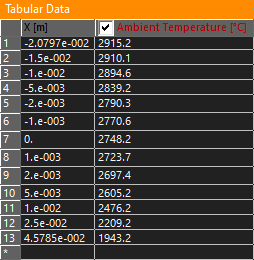
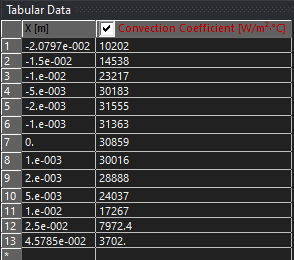

Phase 01
Bartz Heat-Transfer Analysis
The internal engine contour was divided into discrete axial sections through the chamber, converging section, throat, and diverging nozzle. Local area ratios were evaluated at each section and matched with thermodynamic properties generated through NASA CEA.
These local values were passed into MATLAB and used to calculate the gas-side convective heat-transfer coefficient with the Bartz correlation. A first estimate of wall temperature was used to obtain the initial heat-transfer distribution, followed by one additional iteration using the updated wall-temperature prediction.
Gas-Side Heat-Transfer Coefficient
Bartz Correction Factor
Applied Convective Heat Flux


The resulting distributions were exported as tabular data along the engine axial coordinate. The highest predicted convection coefficients occurred near the throat, where gas velocity and thermal loading were greatest.
Phase 02
Transient Thermal Analysis
The analytical results were implemented in ANSYS Mechanical as position-dependent tabular boundary conditions. The Bartz convection coefficients and corresponding gas-side temperatures were applied along the engine axial direction, allowing the local thermal loading to vary through the chamber, throat, and nozzle.
The transient model was used to compare candidate materials, wall thicknesses, and burn durations. These trade studies showed that a 20 mm wall thickness manufactured from C110 copper provided the most suitable heat-sink configuration for the planned short-duration test campaign.
The results shown represent the conservative worst-case condition before film cooling was included. Future film-cooling analysis is expected to reduce the predicted chamber and throat temperatures.
Conservative Design Case
The displayed maximum temperature represents a no-film-cooling worst-case prediction. This case was intentionally used to provide a conservative baseline for material selection, wall-thickness evaluation, and allowable burn-time development.
Future Addition
Structural Analysis
Thermal-stress and pressure-load verification will be added after the structural analysis is completed. This section will evaluate hoop stress, radial stress, thermal expansion, von Mises stress, and the resulting structural safety margin.